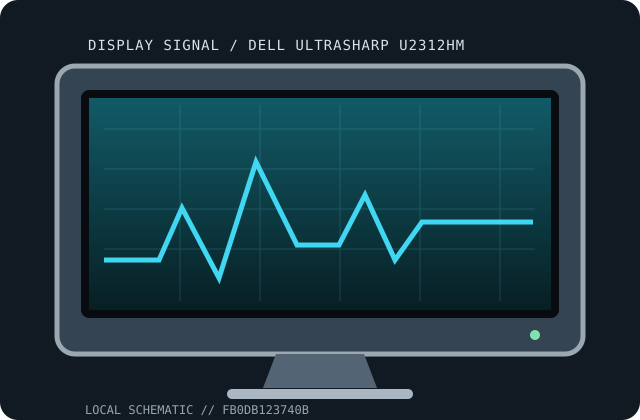

[ INDIVIDUAL COMPONENT // DISPLAYS ]
Dell UltraSharp U2312HM
23-inch 16:9 IPS desktop monitor LCD displays.

IDENTIFICATION: Match the full model and regional suffix on the rear label. Values are tied to the named model; revision-dependent electrical/mechanical details are qualified rather than guessed.
Specifications
| Catalog subcategory | LCD displays |
|---|---|
| Exact product / family | Dell UltraSharp U2312HM |
| Panel / tube | 23-inch e-IPS LCD, 1920 × 1080 |
| Native timing / refresh | 1920 × 1080 at 60 Hz |
| Inputs | DP, DVI-D, VGA, USB 2.0 hub |
| Power | Exact power draw and regional input rating are not transcribed without the matching manual/revision and rear label. |
| Stand / size | Published panel diagonal is stated above. Stand adjustment and VESA support are model-specific; check matching manual and retain stand hardware. |
Revision, signal & host compatibility
Suffixes/revisions can alter panel, input set, MST/firmware, stand bundle and rating. Verify full chassis model before choosing drivers, accessories or manuals.
Use native timing with a source that supports the needed interface bandwidth and refresh. Legacy 4K/5K may require dual-link DVI, DP MST or Thunderbolt; connector shape alone is not compatibility.
Preservation & repair notes
Test each input, USB/card-reader feature and calibration path independently. Preserve ICC files, firmware, accessories and cable specs; avoid panel pressure and follow backlight/power service procedures.
Log serial/date label, accessories, image condition, source signal, calibration, firmware and repair history. Use the manufacturer's service procedures and qualified technicians for internal work.
Manufacturer manuals & sources
- Dell — official support and documentation portalLocate the exact model manual/specification at the manufacturer's portal. The chassis label and matching revision document govern power, timings and service.
- Model-specific manual catalog search: Dell UltraSharp U2312HMDocumentation discovery reference; verify any located guide against the exact model/revision before applying specifications or repair instructions.